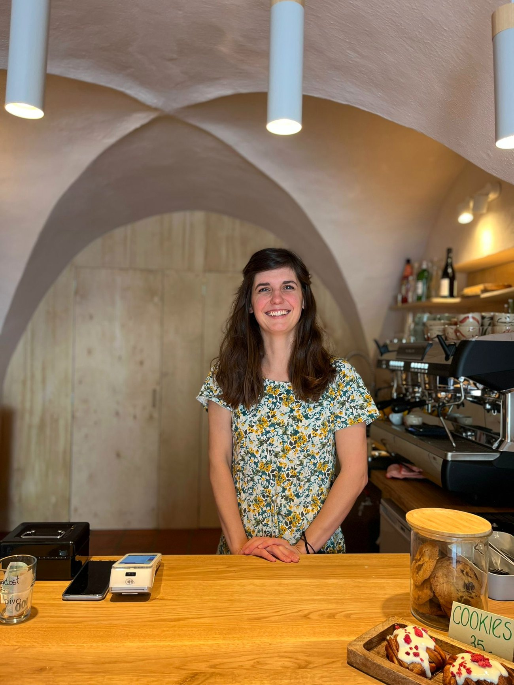

Adéla, Kryštof & Meda
Náš příběh
Rodinný krámek
v klenutém sklepení
Kafe ke kašně jsme otevřeli jako malý rodinný podnik — Adéla, Kryštof a dcera Meda. V historickém domě s klenbami přímo na náměstí děláme to, co nás baví: poctivou kávu a domácí pečení.
Kávu nám praží Candycane coffee v Praze a připravujeme ji jako espresso i filtr. Všechno sladké pečeme sami — proto u nás voní skořice už od rána.
„Kafe si dejte u kašny, nebo u nás pod klenbou."